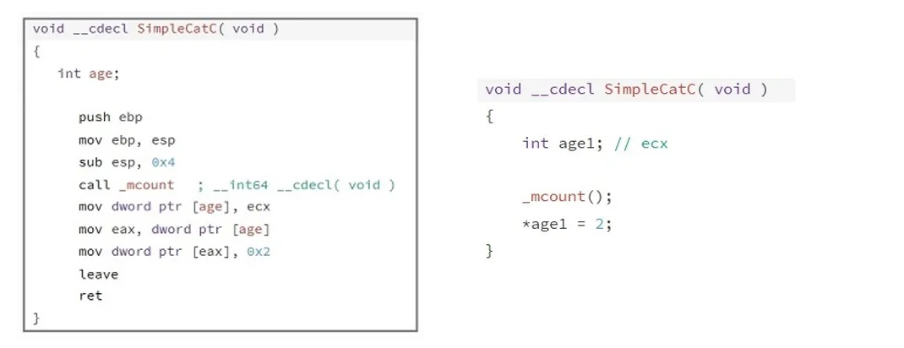
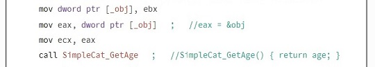
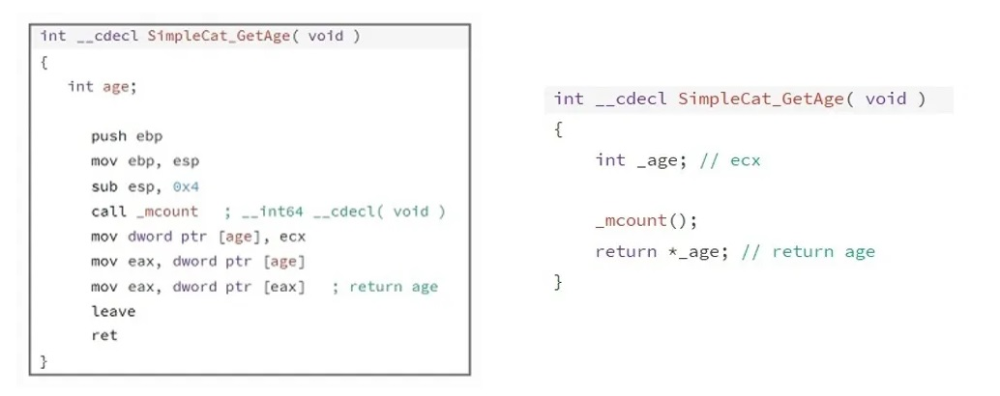
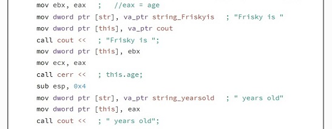
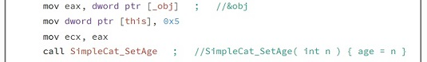
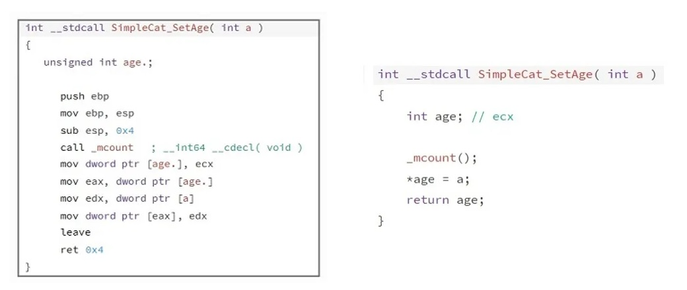
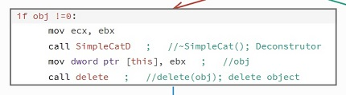
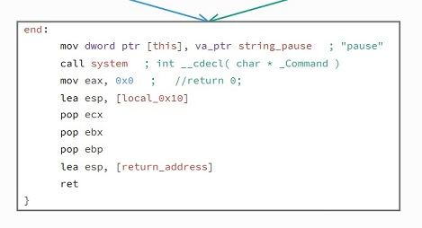

I am going to create C++ program, which will print out two simple strings. The object of this post is to show how I reverse engineer C++ code explaining how objects are created, used and then deleted. I am going to use the Relyze Desktop Application to reverse engineer this program.
This post is linked to another of my blog post where I debug this same source code step by step, while also explaining what is happening with each executed instruction, you can find the link here.
When a C++ program is compiled all class information is lost, class methods are converted to functions, function names are mangled variable names are converted to default names. It can be very confusing and hard to understand, that’s where the Relyze Desktop Application is very easy to use, and the way the assemble code is shown is more understandable.
Relyze DesktopI’m using Relyze Desktop to reverse engineer this program. It loads PE and ELF binaries, allowing you to navigate a binaries structure and discover how it is composed. Visualize the data and enrich the analysis with symbols. The decompiler converts low level native code into a high level pseudo code, allowing you to quickly understand program behaviour. Relyze Desktop allows you to convert and change many of the variables and object names, which can help in understanding the programs structure. I import my executable file into Relyze Desktop and search for the main method.
The main methodWe go the main method, and convert the name and functions to make them more understandable. I convert the assembly code into a more pseudo C++ programming code, allowing me to understand behaviour. I constructed the object creation into what it would look like in the C++ code in the comment section.
I can clearly see the “this” object is created and used to create a new operator. A constructor is created called simpleCatC
SimpleCatC ConstructorThe simplecat function is the first function to be called by default, it has the same name of the Class. When on object (instance of a class) is created, it initializes values to the data members of the object. When looking at this function in assembly, it looks to be a simple function which declares age to be equal to two, we can simplify this by converting to pseudo code.
At the end of this function the value of 2 is passed into eax. If we go back to the main method to continue with the rest of the code.
 SimpleCat_GetAge functionThe simpleCat_GetAge function simply returns the value passed to it. In the assembly ecx holds the objects value, in this case its and integer, passed into a local variable called age. The value is passed into eax, returning that value when the function is called.
We exit out of this function and back into main where we see print instructions to print out the first line of text to screen.
Eax is holding the value of 2, which is eventually moved into Ecx and printed to screen. When this first line is displayed we move on to the rest of the code.
The next function we enter is SimpleCat_SetAge, we can see this pointer is set to 5 making it an argument for the function.
SimpleCat_SetAge functionThis function takes an argument and simply returns that argument into eax.
We enter the main code again, where we enter similar code as before, the SimpleCat_GetAge function and print functions which will print out the second line of text, the only difference is that the age of Frisky is now five.
SimpleCat DeconstrutorNearing the end of the program, the object is checked to see if it still holds a value, if it doesn’t the program is exited, if it does the Deconstructor is called. The Deconstructor is the last function to be called, it’s used to destroy an object. If an object is created using new which allocates memory on the heap, the deconstructor is used to delete and free up memory.
The end of the program, is used to exit out of the program.
